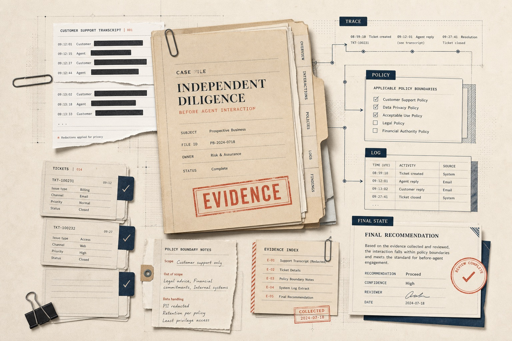

Independent diligence brief
Vendor demos are not diligence. AI agents now answer customers, update tickets, trigger workflows, and recommend refunds or replacements — sometimes touching backend systems. Before that happens, you need evidence, not a sales narrative.

The gap
Procurement, risk, support, and operations leaders are asked to approve agents on the strength of curated demos and vendor claims. The evidence that matters arrives only after real customers and systems are exposed.
The method
We turn what your team already handles — and the scenarios you most fear — into something an agent can be measured against, with evidence captured at every step.
Historical tickets, transcripts, and high-risk synthetic scenarios.
Replayable specifications with expected outcomes and constraints.
Vendor and reference agents run against the same specs.
Outcomes captured and graded by evidence level.
A defensible buyer-side verdict you can act on.
Evidence ladder
Every captured result is rated against four evidence levels, so you can tell the difference between an agent that says it did something and one whose outcome can be independently verified.
The agent's response, with no supporting trace or external confirmation.
A record of the interaction or interface state showing what occurred.
The interaction corroborated by platform-side logs of the actions taken.
Confirmation that the real end state matches the claimed outcome.
The verdict
Diligence concludes with an explicit recommendation for how each capability should be deployed, backed by the evidence behind it.
Current focus
This is where agents touch customers and systems fastest, and where a wrong refund, a missed escalation, or an unauthorized account change carries real cost. We concentrate our diligence work here first.
SCOPE // Support & service-desk agentsWho it's for
Open for early reviews
We're conducting early diligence reviews with a small number of buyers evaluating support and service-desk AI agents. Tell us what you're considering, and we'll show you what evidence-grade evaluation looks like.
Request an early diligence review or email hello@agentdiligence.io